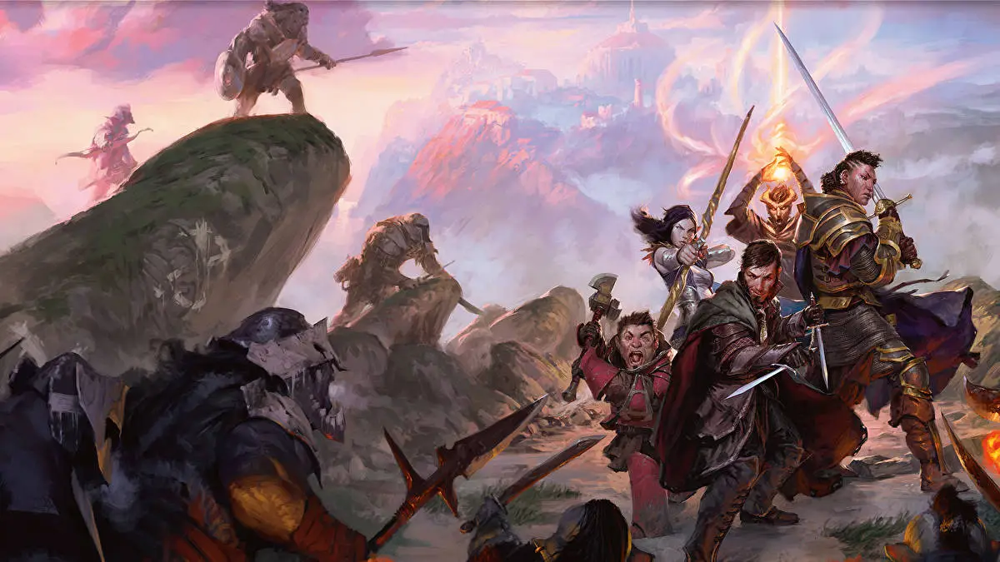
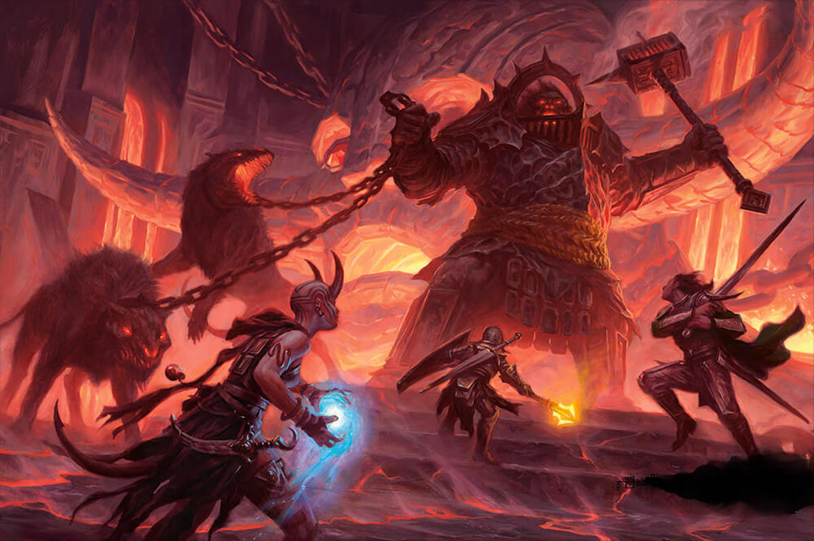
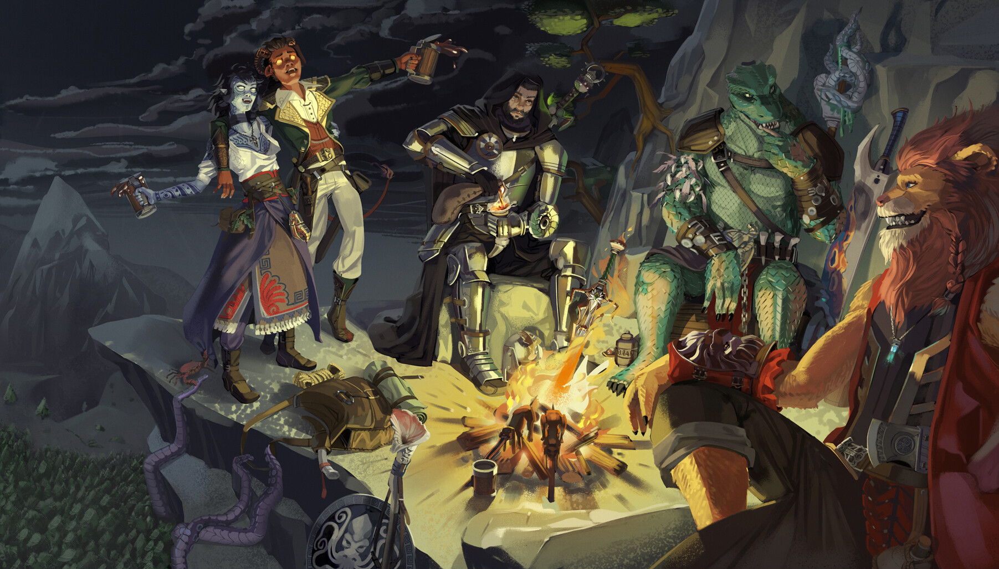

Dracs
A Dungeons & Dragons (aka "Dragones y mazmorras" o "Dracs i Masmorres"), hi han infinitat de criatures fantàstiques. Algunes saben i estan disposades a dialogar, altres no. Sigui com sigui, en aquest TTRPG (TableTop RolePlay Game) el combat està a l'ordre del dia. En multiples ocasions, lluitar és la única opció. Per fer-ho, existeixen diverses especialitzacions en el combat anomenades classes, que poden ajudar en tot tipus d'interaccions socials (pacífiques o no).
"Fuig, dèbil criatura. Diga-li a la resta de fastigosos goblins què els passarà si tornen a importunar-nos."
-Un fort paladí apiadant-se de l'últim goblin supervivent d'un combat contra l'equip d'aventurers.


Mazmorres
No tot és lluitar o parlar a Dungeons & Dragons. Un factor clau en aquest joc és també l'exploració. En multiples ocasions, els jugadors hauràn d'explorar diverses ubicacions: masmorres (obviament), mansions, coves, castells, pobles fantasma... i la llista continua. Moltes vegades no és només explorar el que es veu a simple vista, sino que cal anar un pas més enllà: emprear els sentits per trobar secrets. Una cambra del tresor, una espasa rere la xemeneia, un cuadre que oculta una reliquia darrere o una bossa de monedes dins del tronc d'un arbre milenari; son alguns dels exemples de secrets que es poden trobar a l'univers de Dungeons & Dragons.
"Obro el cofre del tresor!"
-Un descuidat pícaro, instants abans d'explotar amb el cofre trampa.


Llista de definicions:
- d4, d6, d8, d10, d12, d20, d100
- d6, per exemple, fa referència a un dau de 6 cares.
- Crític
- Quan, al tirar un d20 en un combat, surt un 20: éxit automàtic i el doble de mal.
- Pifia
- Quan, al tirar un d20 en un combat, surt un 1: fallada automàtic i normalment alguna penalització.